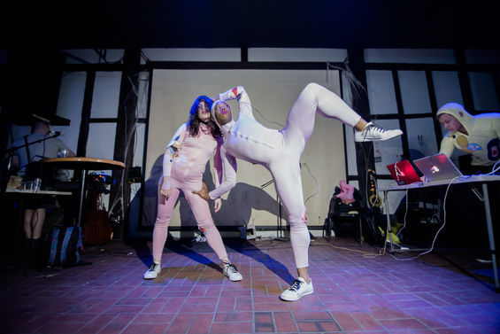
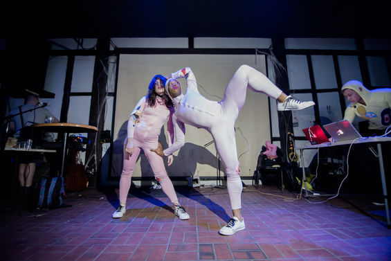

DANCE COLLABORATION: "AMATUER"
performance / interactivity / sound
Featured at the New Wight Gallery as part of Half/Half, an undergraduate Design/Media Arts exhibition, Amateur works with flex sensors to present audiences with a synesthetic experience of physical performance.
A wireless belt is rigged with an Arduino Lilypad, Xbee module, and flex sensors attached to various joints on the body. Data from the flex sensors is used to trigger sound samples, which are selected and updated through a software/midi interface written in processing.
 
